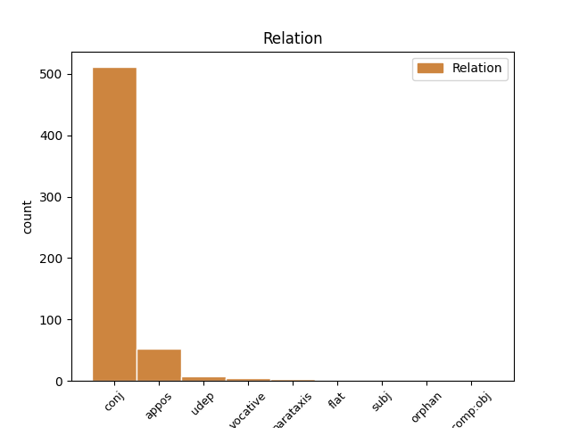
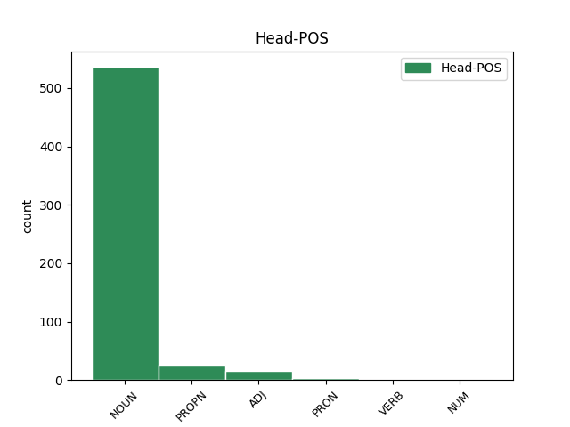
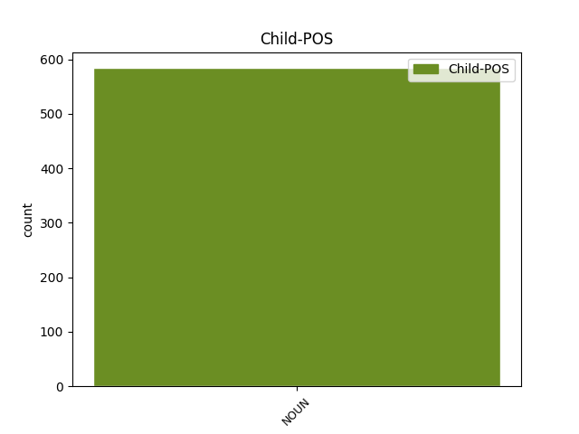

Distribution of features within this leaf



Agreement Rules sorted by frequency.
- When the dependent token is the conjunct(conj) of the head token, and the dependent token is NOUN.
1 Το _ _ _ _ 0 _ _ _
2 άρθρο _ _ _ _ 0 _ _ _
3 9 _ _ _ _ 0 _ _ _
4 του _ _ _ _ 0 _ _ _
5 Πρωτοκόλλου _ _ _ _ 0 _ _ _
6 , _ _ _ _ 0 _ _ _
7 όπως _ _ _ _ 0 _ _ _
8 επεσήμανε _ _ _ _ 0 _ _ _
9 με _ _ _ _ 0 _ _ _
10 αυστηρότητα _ _ _ _ 0 _ _ _
11 η _ _ _ _ 0 _ _ _
12 Πρόεδρος _ _ _ _ 0 _ _ _
13 Fontaine _ _ _ _ 0 _ _ _
14 σ _ _ _ _ 0 _ _ _
15 τον _ _ _ _ 0 _ _ _
16 Εισαγγελέα _ _ _ _ 0 _ _ _
17 , _ _ _ _ 0 _ _ _
18 μας _ _ _ _ 0 _ _ _
19 απαλλάσσει _ _ _ _ 0 _ _ _
20 τελείως _ _ _ _ 0 _ _ _
21 από _ _ _ _ 0 _ _ _
22 οποιαδήποτε _ _ _ _ 0 _ _ _
23 νομική _ _ _ _ 0 _ _ _
24 διαδικασία _ _ _ _ 0 _ _ _
25 σε _ _ _ _ 0 _ _ _
26 σχέση _ _ _ _ 0 _ _ _
27 με _ _ _ _ 0 _ _ _
28 την _ _ _ _ 0 _ _ _
29 έκφραση _ _ _ _ 0 _ _ _
30 γνώμης γνώμη NOUN NOUN Case=Gen|Gender=Fem|Number=Sing 0 _ _ _
31 ή _ _ _ _ 0 _ _ _
32 ψήφου ψήφος NOUN NOUN Case=Gen|Gender=Fem|Number=Sing 30 conj _ _
33 κατά _ _ _ _ 0 _ _ _
34 την _ _ _ _ 0 _ _ _
35 άσκηση _ _ _ _ 0 _ _ _
36 των _ _ _ _ 0 _ _ _
37 καθηκόντων _ _ _ _ 0 _ _ _
38 μας _ _ _ _ 0 _ _ _
39 ως _ _ _ _ 0 _ _ _
40 μέλη _ _ _ _ 0 _ _ _
41 αυτού _ _ _ _ 0 _ _ _
42 του _ _ _ _ 0 _ _ _
43 Κοινοβουλίου _ _ _ _ 0 _ _ _
44 . _ _ _ _ 0 _ _ _
1 Ο _ _ _ _ 0 _ _ _
2 Χάουμε _ _ _ _ 0 _ _ _
3 Μάτας _ _ _ _ 0 _ _ _
4 είχε _ _ _ _ 0 _ _ _
5 λάβει _ _ _ _ 0 _ _ _
6 παρανόμως _ _ _ _ 0 _ _ _
7 500.000 _ _ _ _ 0 _ _ _
8 ευρώ ευρώ NOUN NOUN Case=Acc|Gender=Neut|Number=Sing 0 _ _ _
9 ( _ _ _ _ 0 _ _ _
10 δημόσια _ _ _ _ 0 _ _ _
11 χρήματα χρήμα NOUN NOUN Case=Acc|Gender=Neut|Number=Plur 8 appos _ SpaceAfter=No
12 ) _ _ _ _ 0 _ _ _
13 , _ _ _ _ 0 _ _ _
14 για _ _ _ _ 0 _ _ _
15 να _ _ _ _ 0 _ _ _
16 πληρώσει _ _ _ _ 0 _ _ _
17 δημοσιογράφο _ _ _ _ 0 _ _ _
18 που _ _ _ _ 0 _ _ _
19 έγραφε _ _ _ _ 0 _ _ _
20 τις _ _ _ _ 0 _ _ _
21 ομιλίες _ _ _ _ 0 _ _ _
22 του _ _ _ _ 0 _ _ _
23 . _ _ _ _ 0 _ _ _
1 Αξιότιμε _ _ _ _ 0 _ _ _
2 κύριε _ _ _ _ 0 _ _ _
3 Πρόεδρε _ _ _ _ 0 _ _ _
4 , _ _ _ _ 0 _ _ _
5 κυρία κυρία NOUN NOUN Case=Voc|Gender=Fem|Number=Sing 6 vocative _ _
6 Επίτροπε επίτροπος NOUN NOUN Case=Voc|Gender=Fem|Number=Sing 0 _ _ _
7 , _ _ _ _ 0 _ _ _
8 αξιότιμοι _ _ _ _ 0 _ _ _
9 συνάδελφοι _ _ _ _ 0 _ _ _
10 , _ _ _ _ 0 _ _ _
11 η _ _ _ _ 0 _ _ _
12 ελευθέρωση _ _ _ _ 0 _ _ _
13 των _ _ _ _ 0 _ _ _
14 οδικών _ _ _ _ 0 _ _ _
15 μεταφορών _ _ _ _ 0 _ _ _
16 αναμφίβολα _ _ _ _ 0 _ _ _
17 οδήγησε _ _ _ _ 0 _ _ _
18 σ _ _ _ _ 0 _ _ _
19 το _ _ _ _ 0 _ _ _
20 να _ _ _ _ 0 _ _ _
21 έχουμε _ _ _ _ 0 _ _ _
22 σ _ _ _ _ 0 _ _ _
23 την _ _ _ _ 0 _ _ _
24 Ευρώπη _ _ _ _ 0 _ _ _
25 καλύτερη _ _ _ _ 0 _ _ _
26 προσφορά _ _ _ _ 0 _ _ _
27 και _ _ _ _ 0 _ _ _
28 καλύτερες _ _ _ _ 0 _ _ _
29 τιμές _ _ _ _ 0 _ _ _
30 . _ _ _ _ 0 _ _ _
1 Το _ _ _ _ 0 _ _ _
2 2002 _ _ _ _ 0 _ _ _
3 χρηματοδοτήθηκαν _ _ _ _ 0 _ _ _
4 10.029 _ _ _ _ 0 _ _ _
5 σχέδια _ _ _ _ 0 _ _ _
6 με _ _ _ _ 0 _ _ _
7 ποσόν _ _ _ _ 0 _ _ _
8 λίγο _ _ _ _ 0 _ _ _
9 μεγαλύτερο μεγάλος ADJ ADJ Case=Acc|Degree=Cmp|Gender=Neut|Number=Sing 0 _ _ _
10 των _ _ _ _ 0 _ _ _
11 80 _ _ _ _ 0 _ _ _
12 εκατ. _ _ _ _ 0 _ _ _
13 ευρώ ευρώ NOUN NOUN Case=Acc|Gender=Neut|Number=Sing 9 udep _ SpaceAfter=No
14 . _ _ _ _ 0 _ _ _
1 Αλγερία Αλγερία PROPN PROPN Case=Acc|Gender=Fem|Number=Sing 0 _ _ _
2 : _ _ _ _ 0 _ _ _
3 Απαγωγές απαγωγή NOUN NOUN Case=Acc|Gender=Fem|Number=Plur 1 parataxis _ _
4 ξένων _ _ _ _ 0 _ _ _
5 πολιτών _ _ _ _ 0 _ _ _
6 απ' _ _ _ _ 0 _ _ _
7 την _ _ _ _ 0 _ _ _
8 Αλ _ _ _ _ 0 _ _ _
9 Κάιντα _ _ _ _ 0 _ _ _
10 . _ _ _ _ 0 _ _ _
1 Προτάθηκαν _ _ _ _ 0 _ _ _
2 για _ _ _ _ 0 _ _ _
3 τη _ _ _ _ 0 _ _ _
4 θέση _ _ _ _ 0 _ _ _
5 του _ _ _ _ 0 _ _ _
6 Γενικού _ _ _ _ 0 _ _ _
7 Διοικητή _ _ _ _ 0 _ _ _
8 του _ _ _ _ 0 _ _ _
9 νησιού _ _ _ _ 0 _ _ _
10 οι _ _ _ _ 0 _ _ _
11 Δροζ _ _ _ _ 0 _ _ _
12 , _ _ _ _ 0 _ _ _
13 Σέφερ _ _ _ _ 0 _ _ _
14 , _ _ _ _ 0 _ _ _
15 ο _ _ _ _ 0 _ _ _
16 Μαυροβούνιος _ _ _ _ 0 _ _ _
17 Πέτροβιτς _ _ _ _ 0 _ _ _
18 Μπόζα _ _ _ _ 0 _ _ _
19 , _ _ _ _ 0 _ _ _
20 ο _ _ _ _ 0 _ _ _
21 πρίγκιπας _ _ _ _ 0 _ _ _
22 Βάττεμβεργ _ _ _ _ 0 _ _ _
23 ενώ _ _ _ _ 0 _ _ _
24 οι _ _ _ _ 0 _ _ _
25 Τούρκοι _ _ _ _ 0 _ _ _
26 ήθελαν _ _ _ _ 0 _ _ _
27 γι' _ _ _ _ 0 _ _ _
28 αυτή _ _ _ _ 0 _ _ _
29 τη _ _ _ _ 0 _ _ _
30 θέση _ _ _ _ 0 _ _ _
31 τον _ _ _ _ 0 _ _ _
32 Ανθόπουλο Ανθόπουλος PROPN PROPN Case=Acc|Gender=Masc|Number=Sing 0 _ _ _
33 πασά πασάς NOUN NOUN Case=Acc|Gender=Masc|Number=Sing 32 flat _ SpaceAfter=No
34 . _ _ _ _ 0 _ _ _
1 Αβοήθητοι αβοήθητος ADJ ADJ Case=Nom|Gender=Masc|Number=Plur 0 _ _ _
2 οι _ _ _ _ 0 _ _ _
3 άμαχοι άμαχος NOUN NOUN Case=Nom|Gender=Masc|Number=Plur 1 subj _ _
4 σ _ _ _ _ 0 _ _ _
5 τη _ _ _ _ 0 _ _ _
6 Μπάμπα _ _ _ _ 0 _ _ _
7 Αμρ _ _ _ _ 0 _ _ _
8 της _ _ _ _ 0 _ _ _
9 Συρίας _ _ _ _ 0 _ _ _
Disagree Examples:
1 Σήμερα _ _ _ _ 0 _ _ _
2 σώζονται _ _ _ _ 0 _ _ _
3 μόνο _ _ _ _ 0 _ _ _
4 τρεις _ _ _ _ 0 _ _ _
5 εκκλησίες _ _ _ _ 0 _ _ _
6 , _ _ _ _ 0 _ _ _
7 η _ _ _ _ 0 _ _ _
8 εκκλησία _ _ _ _ 0 _ _ _
9 του _ _ _ _ 0 _ _ _
10 Χριστού _ _ _ _ 0 _ _ _
11 , _ _ _ _ 0 _ _ _
12 με _ _ _ _ 0 _ _ _
13 τις _ _ _ _ 0 _ _ _
14 υπέροχες _ _ _ _ 0 _ _ _
15 τοιχογραφίες τοιχογραφία NOUN NOUN Case=Acc|Gender=Fem|Number=Plur 0 _ _ _
16 του _ _ _ _ 0 _ _ _
17 1695 _ _ _ _ 0 _ _ _
18 και _ _ _ _ 0 _ _ _
19 το _ _ _ _ 0 _ _ _
20 ξύλινο _ _ _ _ 0 _ _ _
21 τέμπλο τέμπλο NOUN NOUN Case=Nom|Gender=Neut|Number=Sing 15 conj _ _
22 της _ _ _ _ 0 _ _ _
23 ίδιας _ _ _ _ 0 _ _ _
24 εποχής _ _ _ _ 0 _ _ _
25 , _ _ _ _ 0 _ _ _
26 η _ _ _ _ 0 _ _ _
27 Αγία _ _ _ _ 0 _ _ _
28 Μαρίνα _ _ _ _ 0 _ _ _
29 και _ _ _ _ 0 _ _ _
30 ο _ _ _ _ 0 _ _ _
31 Άγιος _ _ _ _ 0 _ _ _
32 Νικόλαος _ _ _ _ 0 _ _ _
33 . _ _ _ _ 0 _ _ _
1 Εργαζόμενοι _ _ _ _ 0 _ _ _
2 σε _ _ _ _ 0 _ _ _
3 ανθρωπιστικές _ _ _ _ 0 _ _ _
4 αποστολές _ _ _ _ 0 _ _ _
5 περιμένουν _ _ _ _ 0 _ _ _
6 από _ _ _ _ 0 _ _ _
7 την _ _ _ _ 0 _ _ _
8 Παρασκευή _ _ _ _ 0 _ _ _
9 να _ _ _ _ 0 _ _ _
10 στείλουν _ _ _ _ 0 _ _ _
11 προμήθειες _ _ _ _ 0 _ _ _
12 σ _ _ _ _ 0 _ _ _
13 τη _ _ _ _ 0 _ _ _
14 Μπάμπα _ _ _ _ 0 _ _ _
15 Αμρ _ _ _ _ 0 _ _ _
16 , _ _ _ _ 0 _ _ _
17 αλλά _ _ _ _ 0 _ _ _
18 οι _ _ _ _ 0 _ _ _
19 Συριακές _ _ _ _ 0 _ _ _
20 Αρχές _ _ _ _ 0 _ _ _
21 δεν _ _ _ _ 0 _ _ _
22 τους _ _ _ _ 0 _ _ _
23 επιτρέπουν _ _ _ _ 0 _ _ _
24 την _ _ _ _ 0 _ _ _
25 είσοδο _ _ _ _ 0 _ _ _
26 σ _ _ _ _ 0 _ _ _
27 την _ _ _ _ 0 _ _ _
28 πόλη _ _ _ _ 0 _ _ _
29 , _ _ _ _ 0 _ _ _
30 επικαλούμενες επικαλούμενος ADJ ADJ Case=Nom|Gender=Fem|Number=Plur 0 _ _ _
31 προβλήματα πρόβλημα NOUN NOUN Case=Acc|Gender=Neut|Number=Plur 30 comp:obj _ _
32 ασφάλειας _ _ _ _ 0 _ _ _
33 . _ _ _ _ 0 _ _ _
1 Διότι _ _ _ _ 0 _ _ _
2 τόσο _ _ _ _ 0 _ _ _
3 το _ _ _ _ 0 _ _ _
4 ευρώ ευρώ NOUN NOUN Case=Nom|Gender=Neut|Number=Sing 0 _ _ _
5 , _ _ _ _ 0 _ _ _
6 κυρίες κυρία NOUN NOUN Case=Voc|Gender=Fem|Number=Plur 4 vocative _ _
7 και _ _ _ _ 0 _ _ _
8 κύριοι _ _ _ _ 0 _ _ _
9 , _ _ _ _ 0 _ _ _
10 όσο _ _ _ _ 0 _ _ _
11 και _ _ _ _ 0 _ _ _
12 η _ _ _ _ 0 _ _ _
13 Οικονομική _ _ _ _ 0 _ _ _
14 και _ _ _ _ 0 _ _ _
15 Νομισματική _ _ _ _ 0 _ _ _
16 Ένωση _ _ _ _ 0 _ _ _
17 γεννήθηκαν _ _ _ _ 0 _ _ _
18 σ _ _ _ _ 0 _ _ _
19 την _ _ _ _ 0 _ _ _
20 Μαδρίτη _ _ _ _ 0 _ _ _
21 . _ _ _ _ 0 _ _ _
1 Η _ _ _ _ 0 _ _ _
2 απόδειξη απόδειξη NOUN NOUN Case=Nom|Gender=Fem|Number=Sing 0 _ _ _
3 , _ _ _ _ 0 _ _ _
4 δεκαπέντε _ _ _ _ 0 _ _ _
5 ημέρες ημέρα NOUN NOUN Case=Acc|Gender=Fem|Number=Plur 2 udep _ _
6 μετά _ _ _ _ 0 _ _ _
7 από _ _ _ _ 0 _ _ _
8 την _ _ _ _ 0 _ _ _
9 εισαγωγή _ _ _ _ 0 _ _ _
10 του _ _ _ _ 0 _ _ _
11 ευρώ _ _ _ _ 0 _ _ _
12 : _ _ _ _ 0 _ _ _
1 Και _ _ _ _ 0 _ _ _
2 τα _ _ _ _ 0 _ _ _
3 δύο _ _ _ _ 0 _ _ _
4 όργανα _ _ _ _ 0 _ _ _
5 αναγνωρίζουν _ _ _ _ 0 _ _ _
6 τον _ _ _ _ 0 _ _ _
7 επείγοντα _ _ _ _ 0 _ _ _
8 χαρακτήρα _ _ _ _ 0 _ _ _
9 και _ _ _ _ 0 _ _ _
10 την _ _ _ _ 0 _ _ _
11 ουσία _ _ _ _ 0 _ _ _
12 του _ _ _ _ 0 _ _ _
13 προβλήματος πρόβλημα NOUN NOUN Case=Gen|Gender=Neut|Number=Sing 0 _ _ _
14 : _ _ _ _ 0 _ _ _
15 τους _ _ _ _ 0 _ _ _
16 οδηγούς οδηγός NOUN NOUN Case=Acc|Gender=Masc|Number=Plur 13 appos _ _
17 από _ _ _ _ 0 _ _ _
18 χώρες _ _ _ _ 0 _ _ _
19 εκτός _ _ _ _ 0 _ _ _
20 ΕΕ _ _ _ _ 0 _ _ _
21 . _ _ _ _ 0 _ _ _